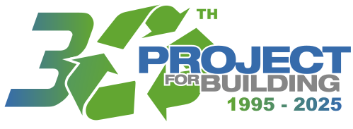

Fonti Pineta (3ª Superiore)
In terza superiore abbiamo visitato lo stabilimento Fonti Pineta, che fa parte del gruppo Bracca, a Clusone (BG). L’azienda si occupa dell’imbottigliamento di acqua oligominerale. Durante la visita, abbiamo seguito da vicino l’intero processo produttivo, dalla soffiatura delle bottiglie in PET, al riempimento automatizzato, fino al confezionamento e alla logistica.
Ci ha colpito l’efficienza del sistema, la precisione dei macchinari e l’attenzione all’igiene e al controllo qualità. È stata un’esperienza utile per capire come si muove una realtà industriale moderna nel settore alimentare.
Project for Building (4ª Superiore) 
In quarta superiore abbiamo visitato Project for Building, un’azienda innovativa che si occupa di edilizia sostenibile e riciclo dei materiali plastici. Ci hanno spiegato l’importanza dell’economia circolare e mostrato come diversi tipi di plastica (come PE, PP, PVC) vengano selezionati, riciclati e trasformati in materiali utilizzabili nel mondo delle costruzioni.
È stato davvero interessante vedere come si possa dare nuova vita a materiali che altrimenti finirebbero in discarica. La parte più coinvolgente è stata sicuramente la spiegazione sui tipi di plastica e le loro proprietà, e su come queste influenzano l’uso nei cantieri.